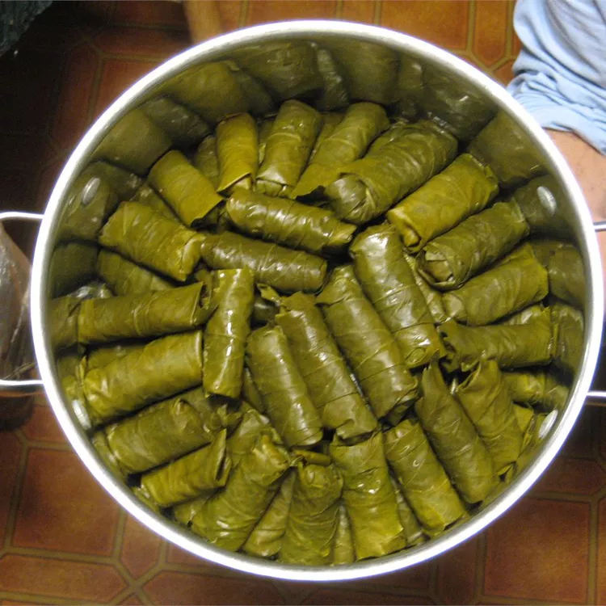

Stuffed Grape Leaves

Description
The spices may seem like a strange combination, but this is a wonderful, delicate traditional Turkish dish with a twist.
Serve chilled, as is traditional, or warm, as desired.
Squeeze fresh lemon juice over dolmas before serving.
Ingredients
- 1 tablespoon olive oil
- 2 onions, minced
- 1 ½ cups uncooked white rice
- 2 tablespoons tomato paste
- 2 tablespoons dried currants
- 2 tablespoons pine nuts
- 1 tablespoon ground cinnamon
- 1 tablespoon dried mint
- 1 tablespoon dried dill weed
- 1 teaspoon ground allspice
- 1 teaspoon ground cumin
- 1 (8 ounce) jar grape leaves, drained and rinsed